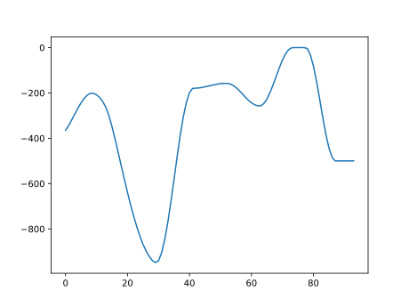

UTAU Pitch字符串解码♬
简要声明♬
你好，初次见面，我是狼大。
这篇文章是基于tn_fnds的源代码分析而得的，会存在大量不严谨和过度简化的部分。
你可以在这里找到源代码。
特别鸣谢 Serix 对于源代码的解读。
解码♬
Pitch字符串是什么♬
对于UTAU传到resampler的参数里面，有一条就是Pitch字符串。
@"%resamp%"%1 %temp% %2 %vel% %flag% %5 %6 %7 %8 %params%
启动重采样引擎
%params% 里面有
@set params=100 0 !120 AA#5#
AA#5# 就是Pitch字符串
分割Pitch字符串♬
知道Pitch字符串是什么了，现在开始进行一些简单的处理。
6T6o7B7b718M8g8u82828w8k8S757U6j5s4x31262B1K0YzqzAycx/xnxVxMxTx2ywz81X254d577O8O859M9N9O9Q9T9W9Z9c9f9h9i9i9g9a9Q9D818m8Y8N8E7/7/8J8d869c+C+n/J/k/3//AA#14#/8/h+v9s8e7O6D5G4d4M#18#
（是的我知道这个很长）
我们先以#字符为分割线进行分割。
T6o7B7b718M8g8u82828w8k8S757U6j5s4x31262B1K0YzqzAycx/xnxVxMxTx2ywz81X254d577O8O859M9N9O9Q9T9W9Z9c9f9h9i9i9g9a9Q9D818m8Y8N8E7/7/8J8d869c+C+n/J/k/3//AA#14#/8/h+v9s8e7O6D5G4d4M#18#
然后，对于每一段不是#数字#格式的，每两个为一组.
比如：
/8 /h +v 9s 8e 7O 6D 5G 4d 4M
对于刚刚的#数字#格式，对对应的Pitch字符串根据数字重复最后一组字符。
比如：
/8/h+v9s8e7O6D5G4d4M#18#
变成
/8/h+v9s8e7O6D5G4d4M4M4M4M4M4M4M4M4M4M4M4M4M4M4M4M4M4M4M
（合计19个4M）
Get64函数♬
在tn_fnds里面有一个函数叫做get64( )
（注：这段代码是从飴屋／菖蒲的world4utau.cpp移植的）
简而言之，
- 对于A～Z的字符，返回0~25的值
- 对于a～z的字符，返回26~51的值
- 对于0～9的字符，返回52~61的值
- 对于 + 字符，返回62
- 对于 / 字符，返回63
解码♬
对于刚刚分割好的每一组两个字符(char x, char y)
进行get64(x)*64 + get64(y)
如果结果大于2047，减去4096就可以得到正确的值，
也就是说，Pitch数值应介于-2048~2047。
返回的值就是解码过后的Pitch数值。
比如/8：
get64(/) -> 63get64(8) -> 60
所以Pitch数值为 63*64 + 60 - 4096 = -4
我写了一个简单的Python脚本，用matplotlib得到的结果：

尾声♬
不过对于Pitch数值的单位，如何转换成偏移的频率还没有研究。
如果有想法，可以对我的文档进行补充！
以上就是基本的解码啦，希望有学到一些！
再次感谢 Serix 对于源代码的解读！